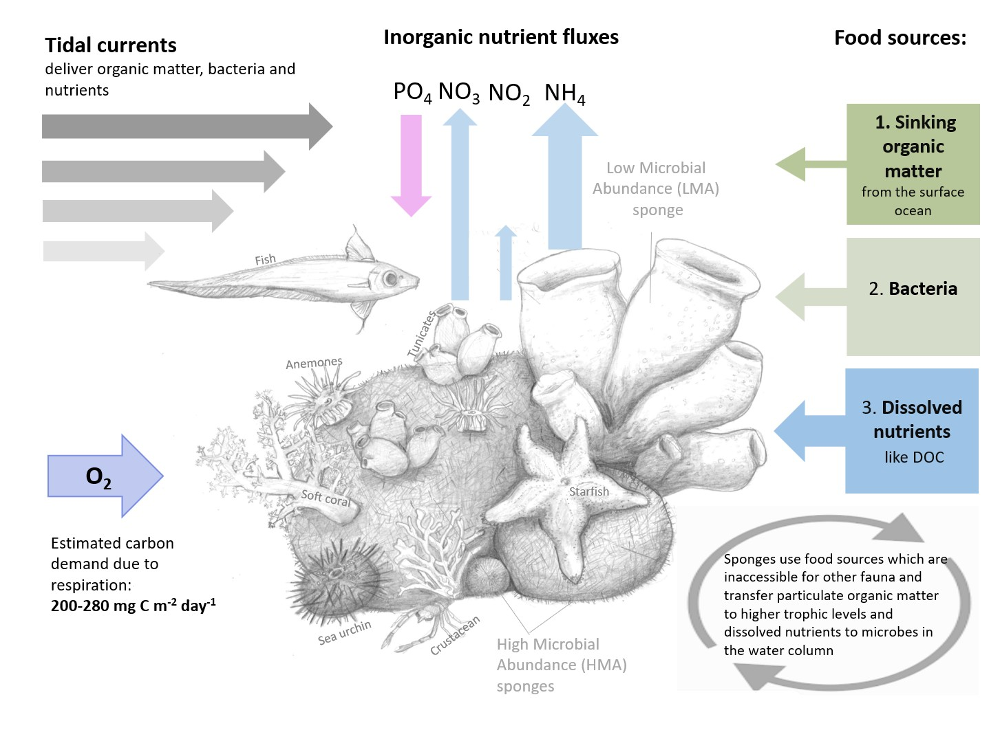

Current and past research
I am a marine researcher fascinated by the ocean across scales — from shallow coastal waters to the deep sea, from the Arctic to Antarctica, and from hydrodynamic processes to biogeochemical cycling. My work focuses primarily on sponges, organisms that are deeply connected to their surrounding environment. Because of this, I am equally interested in the physical and chemical processes shaping the waters around them. At the same time, many of the internal processes within sponges remain poorly understood, and even less is known about how these processes influence the ecosystems that surround them. Exploring and bridging these gaps is at the heart of my research.
Southern Ocean
The Southern Ocean is exceptionally rich in nutrients, particularly silicate — a key ingredient for organisms that build silica-based skeletons. This makes it an ideal habitat for glass sponges. Unlike most parts of the world’s oceans, where these remarkable animals typically live in the deep sea, the Southern Ocean allows them to thrive at surprisingly shallow depths of just 20–30 m.
Arctic ocean
In the Arctic Ocean we investigate deep-sea sponge grounds that can take very different forms. On the Schulz Bank seamount, for example, dense and thriving sponge communities can cover vast areas of the seafloor. In other locations, sponge grounds may be dominated by only a single sponge species, forming unique but equally important habitats.
These sponge grounds are considered Vulnerable Marine Ecosystems (VMEs). They create complex three-dimensional habitats that support a wide variety of associated organisms, including fish, crustaceans, and other invertebrates—some of which are commercially important species. By providing shelter, feeding grounds, and breeding areas, sponge ecosystems play a crucial role in maintaining biodiversity in the deep Arctic Ocean.
